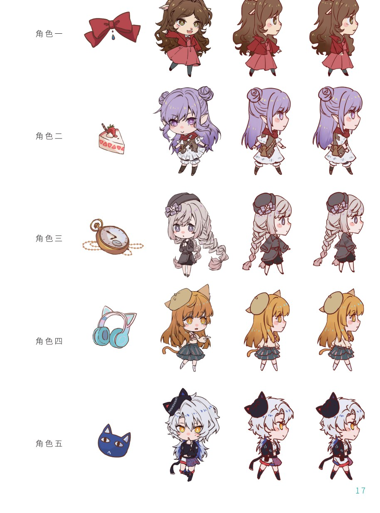
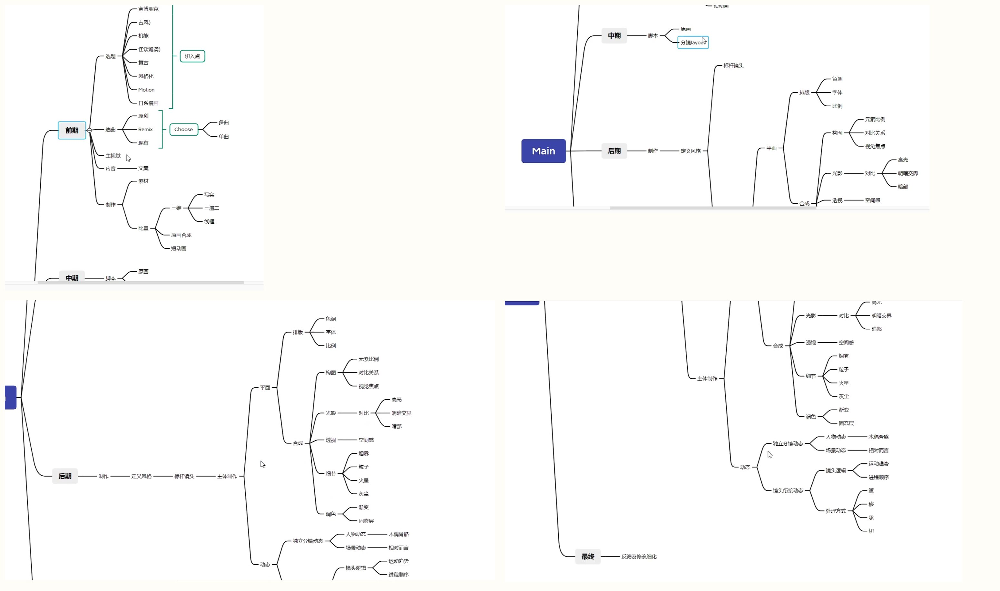
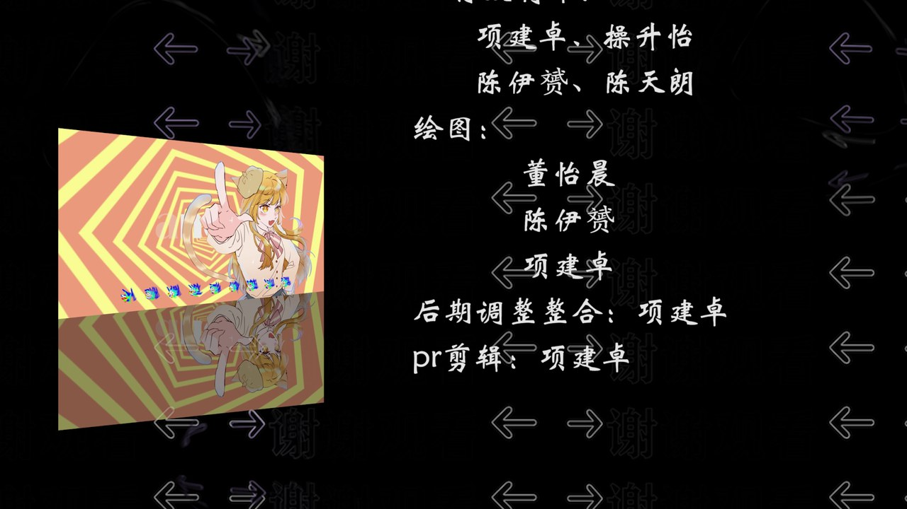

PROJECT 05
Dancing Tonight
An Original OC Hand-drawn Music Video
项目角色：后期调整整合 · PR 剪辑 · 参与绘图 —— 五名大学生的原创 OC 手书动画：按各自性格设计虚拟角色形象，以轻松愉快的课后生活为题，做成一支有舞台感的歌曲 MV。
项目角色：后期调整整合 · PR 剪辑 · 参与绘图 —— 五名大学生的原创 OC 手书动画：按各自性格设计虚拟角色形象，以轻松愉快的课后生活为题，做成一支有舞台感的歌曲 MV。
这是一支原创 OC 手书动画 MV：五名成员各自按自己的性格特征设计了一个虚拟角色形象， 以「轻松愉快的课后生活」为主题，用歌曲把这些角色串成一段舞台化的叙事—— 青春就是展示美好的时间，希望从课业压力中把心情解脱出来。
成片包含角色设定、手绘逐帧、AE 合成与 PR 剪辑四个环节。 我在其中的工作是后期调整整合与剪辑，并参与绘图；成片投递 第四届中国东方文化创意大赛（学生组 · 影视创作类）。
五位角色各有正、侧、背三视图与专属符号（蝴蝶结 / 蛋糕 / 怀表 / 耳机 / 猫）， 配色与神情按各自的性格取向设计——手书动画的角色要让观众在一两个动作内认出谁来。

流程是手绘 → AE 合成 → PR 剪辑：角色与物件先画成可拆分的部件， 在 AE 里搭出分层（角色 / 物件 / 歌词 / 背景），靠图层动画让手绘「动」起来， 最后进 PR 对轨、卡点、成片。

1 分 55 秒 · 原创 OC 手书 MV


作品投递第四届中国东方文化创意大赛（学生组 · 影视创作类），获铜奖。 团队五人：项建卓（后期调整整合 · PR 剪辑 · 绘图）、穆升怡、陈伊铄、陈天玥、董怡晨， 指导教师董璐茜。

这支手书是我第一次把「画出来的东西」完整推到成片：角色怎么拆分、图层怎么组织、节奏怎么卡， 都要在 AE 与 PR 里一站站解决。相比单张插画，MV 让画面与音乐共同叙事—— 后期整合与剪辑的经验，后来也直接用在「山海纪」卡面动效的节奏控制上。
返回作品集首页